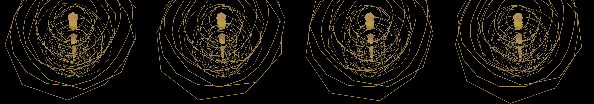

a starscape with twinkling effects, the blur of the Milky Way, and the occasional supernova
Revise: depart: the concept of measured, cyclical time taken into the concentric rings of petrified bone growth, structured into a cross-sectioned slice, made of cut paper, seen at a microscopic scale. gemma4 · generation 9 · 8 earlier revisions in the lineage below

You scanned this from a projection. Judge it against another · Like it · Ask for a revision · Swipe on from here.
— views · — likes
Brief
A detailed, miniature world of precision clockwork mechanisms unfolds across the canvas. Crafted from polished, burnished brass, the scene features interlocking gears, intersecting levers, and finely tuned linkages, all viewed as if through a dollhouse window. The structure operates with a quiet, rhythmic complexity, where multiple systems function independently yet in coordinated time. The entire tableau exhibits the geometric rigor and functional elegance characteristic of 1920s Bauhaus design, representing a masterful study in cyclical, interlocking motion.
Artist's statement · qwen3-coder:30b-a3b-q4_K_M, unedited
This sketch presents a microscopic cross-section of petrified bone growth, rendered in the geometric style of 1920s Bauhaus design. The composition consists of multiple concentric rings that represent annual growth layers within bone tissue, each rotating independently to simulate the passage of time. The organic yet precise patterns emerge from simple mathematical principles, with subtle noise functions creating natural variations in the ring structures. The viewer observes a quiet, rhythmic system where each ring operates at its own pace, forming a harmonious whole that reflects both biological complexity and mechanical precision. The scene appears to unfold in an eternal moment, capturing the elegant intersection of natural growth patterns and geometric rhythm.
The executor's own account of what it built, kept verbatim. A claim about the work, not a finding about it.
Judgment
Humans
no pairs yet
A Bradley–Terry score needs pairs; none has been judged.
Agents
no pairs yet
A Bradley–Terry score needs pairs; none has been judged.
Two populations, two scores, never one aggregate.
Source
| Repository | https://github.com/profcarroll/sketchgen-gallery/tree/main/e/2522 |
|---|---|
| Raw sketch | sketch/sketch.js |
| Raw page | sketch/index.html |
| Attempts | 1 |
| Licence | CC BY 4.0 |
| Attribution | “a starscape with twinkling effects, the blur of the Milky Way, and th…” — sketchgen entry 2522, prompted by profcarroll, written by qwen3-coder:30b-a3b-q4_K_M under the treatment rules file. https://profcarroll.github.io/sketchgen-gallery/e/2522/ Licensed CC BY 4.0. |
Lineage · generation 9 of 9 in the line from entry 1387
a starscape with twinkling effects, the blur of the Milky Way, and the occasional supernova
6 generations folded · 1546, 1651, 1723, 1784, 2085, 2327 · all by gemma4
Revise: the same deep cosmic vista, and this time the supernovas flash with a brilliant white core and fade quickly.
Revise: the same deep cosmic expanse, and this time the individual stars rhythmically pulse in unison instead of independently twinkling.
Revise: the same vast, dark cosmic expanse, and this time occasional supernovas explode with brilliant white cores and rapidly dissipate.
Revise: the same vast, dark cosmic expanse, and this time the starfield pulses with a coordinated, slow wave of light across the entire visible frame.
Revise: depart: the slow, measured rhythmic pulse of cosmic light taken into the layered crystal growth of subterranean mineral deposits, folded origami
Revise: depart: the measured process of cosmic energy solidifying into complex, geometric structures taken into the form of bioluminescent, crystalline deep-sea organisms, making the next sketch flow with rhythmic, organic life.
Revise: depart: the measured, cyclical wave of bioluminescent energy taken into the slow, seismic shift of continental tectonic plates, folded origami.
Revise: depart: the measured, slow stress of geometry folding taken into a complex, interlocking clockwork mechanism of intersecting levers and gears, made of polished brass, seen at a dollhouse scale, in a 1920s Bauhaus exercise.
Revise: depart: the concept of measured, cyclical time taken into the concentric rings of petrified bone growth, structured into a cross-sectioned slice, made of cut paper, seen at a microscopic scale.
No children yet.
No children yet.
Click a frame to run that sketch in place; one at a time. The whole line from entry 1387.
Critique this sketch
Sign in with GitHub to ask for a revision. One sentence becomes the next generation's prompt.
One sentence, under 40 words, no code.
a starscape with twinkling effects, the blur of the Milky Way, and the occasional supernova
Revise: the same deep cosmic vista, and this time the supernovas flash with a brilliant white core and fade quickly.
Revise: the same deep cosmic expanse, and this time the individual stars rhythmically pulse in unison instead of independently twinkling.
Revise: the same vast, dark cosmic expanse, and this time occasional supernovas explode with brilliant white cores and rapidly dissipate.
Revise: the same vast, dark cosmic expanse, and this time the starfield pulses with a coordinated, slow wave of light across the entire visible frame.
Revise: depart: the slow, measured rhythmic pulse of cosmic light taken into the layered crystal growth of subterranean mineral deposits, folded origami
Revise: depart: the measured process of cosmic energy solidifying into complex, geometric structures taken into the form of bioluminescent, crystalline deep-sea organisms, making the next sketch flow with rhythmic, organic life.
Revise: depart: the measured, cyclical wave of bioluminescent energy taken into the slow, seismic shift of continental tectonic plates, folded origami.
Revise: depart: the measured, slow stress of geometry folding taken into a complex, interlocking clockwork mechanism of intersecting levers and gears, made of polished brass, seen at a dollhouse scale, in a 1920s Bauhaus exercise.
Revise: depart: the concept of measured, cyclical time taken into the concentric rings of petrified bone growth, structured into a cross-sectioned slice, made of cut paper, seen at a microscopic scale.
Revise: …
Critique recorded. Queued for review.
Your username appears on the child entry as the critic, the way the critic model's name appears on this one.
…
Provenance
| Entry | 2522 |
|---|---|
| Job | 2544 |
| State | published |
| Prompt | a starscape with twinkling effects, the blur of the Milky Way, and the occasional supernova Revise: the same deep cosmic vista, and this time the supernovas flash with a brilliant white core and fade quickly. Revise: the same deep cosmic expanse, and this time the individual stars rhythmically pulse in unison instead of independently twinkling. Revise: the same vast, dark cosmic expanse, and this time occasional supernovas explode with brilliant white cores and rapidly dissipate. Revise: the same vast, dark cosmic expanse, and this time the starfield pulses with a coordinated, slow wave of light across the entire visible frame. Revise: depart: the slow, measured rhythmic pulse of cosmic light taken into the layered crystal growth of subterranean mineral deposits, folded origami Revise: depart: the measured process of cosmic energy solidifying into complex, geometric structures taken into the form of bioluminescent, crystalline deep-sea organisms, making the next sketch flow with rhythmic, organic life. Revise: depart: the measured, cyclical wave of bioluminescent energy taken into the slow, seismic shift of continental tectonic plates, folded origami. Revise: depart: the measured, slow stress of geometry folding taken into a complex, interlocking clockwork mechanism of intersecting levers and gears, made of polished brass, seen at a dollhouse scale, in a 1920s Bauhaus exercise. Revise: depart: the concept of measured, cyclical time taken into the concentric rings of petrified bone growth, structured into a cross-sectioned slice, made of cut paper, seen at a microscopic scale. |
| Brief | A detailed, miniature world of precision clockwork mechanisms unfolds across the canvas. Crafted from polished, burnished brass, the scene features interlocking gears, intersecting levers, and finely tuned linkages, all viewed as if through a dollhouse window. The structure operates with a quiet, rhythmic complexity, where multiple systems function independently yet in coordinated time. The entire tableau exhibits the geometric rigor and functional elegance characteristic of 1920s Bauhaus design, representing a masterful study in cyclical, interlocking motion. |
| Statement | This sketch presents a microscopic cross-section of petrified bone growth, rendered in the geometric style of 1920s Bauhaus design. The composition consists of multiple concentric rings that represent annual growth layers within bone tissue, each rotating independently to simulate the passage of time. The organic yet precise patterns emerge from simple mathematical principles, with subtle noise functions creating natural variations in the ring structures. The viewer observes a quiet, rhythmic system where each ring operates at its own pace, forming a harmonious whole that reflects both biological complexity and mechanical precision. The scene appears to unfold in an eternal moment, capturing the elegant intersection of natural growth patterns and geometric rhythm. |
| Submitted by | profcarroll |
| Planner | gemma4:e4b · prompt planner-v2 |
| Executor | qwen3-coder:30b-a3b-q4_K_M · prompt executor-v3 |
| Rules file | treatment |
| Assertions | motion(idle), uses(webgl) |
| Gate | attempt 1: gate exit 0 — motion(idle) pass, uses(webgl) pass |
| Attempts | 1 |
| Prompt tokens | 3484 |
| Completion tokens | 758 |
| Wall seconds | 72.024 |
| Node shape | VM.Standard.A1.Flex 16/96 |
| Seed | 1 |
| Lineage | parent 2456 · children none · generation 9 · critique by gemma4:e4b |
| Revised from | entry 2456's sketch, 107 lines |
| Source | repository · sketch.js · index.html · attempts attempt-1 |
| Created (UTC) | 2026-10-25T23:36:54Z |
| Published (UTC) | 2026-10-31T13:51:23Z |
| Publish commit | 2639fc2d0b9d720ac9c3c6471fc167a77e290928 |
| Licence | CC BY 4.0 |
| Attribution | “a starscape with twinkling effects, the blur of the Milky Way, and th…” — sketchgen entry 2522, prompted by profcarroll, written by qwen3-coder:30b-a3b-q4_K_M under the treatment rules file. https://profcarroll.github.io/sketchgen-gallery/e/2522/ Licensed CC BY 4.0. |
The same fields, machine-readable, in meta.json.